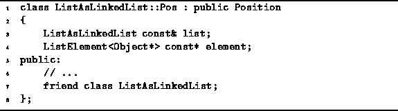

Data Structures and Algorithms
with Object-Oriented Design Patterns in C++
Data Structures and Algorithms
with Object-Oriented Design Patterns in C++
Program  gives the definition of a the
ListAsLinkedList::Pos class,
the purpose of which is to record the position of an item
in an ordered list implemented as a linked list.
gives the definition of a the
ListAsLinkedList::Pos class,
the purpose of which is to record the position of an item
in an ordered list implemented as a linked list.

Program: ListAsLinkedList::Pos Class Definition
The ListAsLinkedList::Pos class has two member variables--list and element. The first is a reference to the ordered list which contains the item of interest; the second is a pointer to the linked-list element in which the item appears. Notice that the implementation of the ListAsLinkedList::Pos class is fundamentally different from the array version, ListAsArray::Pos. In the array version, the position was specified by an offset, i.e, by an ordinal number that shows the position of the item in the ordered sequence. In the linked-list version, the position is specified by a pointer to the element of the linked list in which the item is stored. Regardless of the implementation, both kinds of position provide exactly the same functionality--their public interfaces are identical.
 Copyright © 1997 by Bruno R. Preiss, P.Eng. All rights reserved.
Copyright © 1997 by Bruno R. Preiss, P.Eng. All rights reserved.